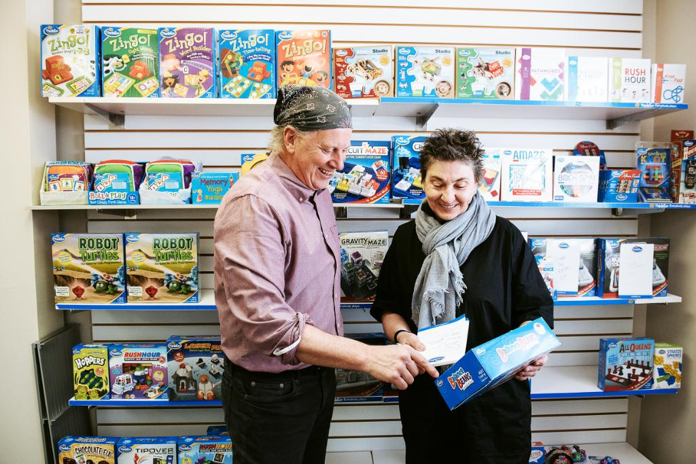

Tweets
- Tweets
- Tweets & replies
- Media
You blocked @GoogleSmallBiz
Are you sure you want to view these Tweets? Viewing Tweets won't unblock @GoogleSmallBiz
-
Rocket science? Child's play. Bill Ritchie of
@ThinkFun used his childhood hobbies to make math fun.#PathToToday https://goo.gl/cxXTpM pic.twitter.com/gc0htMAAaE -
TGIF and happy
#NationalBeerDay! Here's how@Hellbenderbeer used an eco-friendly concept to hop into the brew biz. https://goo.gl/85XOEx pic.twitter.com/u4XHKgvQbc -
You've worked hard so that every day, you get to do what you love.
#SmallBizTruths#GoogleSmallBiz https://goo.gl/Bp0bkR pic.twitter.com/UpRRhWEMWL -
Brian of
@MightyMoCoffee took a mantra “another day, another adventure" and turned it into a business.#PathtoToday https://goo.gl/gfVB1z pic.twitter.com/8Vz5oU02QM -
Unsure about how to confront unconscious bias at your business? Host your own bias-busting workshop. https://goo.gl/4r4o8M pic.twitter.com/6P2WeNtfyw
-
Great workshop in Pittsburgh w/
@mikecaps,@anastasiakudrez &@USRepMikeDoyle to help local businesses get online. http://goo.gl/MiBvsU https://twitter.com/MikeCaps/status/847824922256822272 … -
Happy Financial Literacy Month!
#FinancialLitTip: Go digital with your expenses and toss the old grocery receipts. https://goo.gl/j0cVaH pic.twitter.com/6Uzz0ggl3M -
Learn how affiliate marketing can help your
#smallbiz reach the right audience in this lesson from@yourprimer: https://www.yourprimer.com/app/en/lesson/affiliatemarketing/0/ …pic.twitter.com/uXmmJfI7ac -
Special thanks to our Small Business Advisors for their contributions:
@RajNijjer@nowsourcing@MyVSF_Brandon#SBAchat -
Special thanks to our Small Business Advisors for their contributions:
@TierraMWilson@curatormary@smallbiztrends@popcornicecream#SBAchat -
We're happy to have participated,
@SBAGov. Big thanks to everyone involved in this celebration of#WomensHistoryMonth!#SBAchathttps://twitter.com/SBAgov/status/846813355960680449 … -
A7: We love the helpful tools and resources on the
@NWBC (https://www.nwbc.gov/ ) and@SBAgov (https://www.sba.gov/starting-business/how-start-business/business-types/women-owned-businesses …) websites!#SBAchathttps://twitter.com/SBAgov/status/846811613869068290 … -
A6: Confidence fuels success for women in business. Get great advice from
@sylvng in this article: https://sylvia.ng/2017/03/14/confidence-and-the-gender-gap-tips-for-women-in-tech/ …#SBAchathttps://twitter.com/SBAgov/status/846810097804345345 … -
A5: A great manager keeps their team motivated by instilling passion and leading by example. https://docs.google.com/document/d/19OZrmMkQbvVsgQ1vZAvHmMSyQ9muU0Gc4y0GMh08Ks0/edit?usp=sharing …
#SBAchathttps://twitter.com/SBAgov/status/846808523287728134 … -
A4: Each word in a job posting says a lot about your
#smallbiz. Check these tips for writing your listing: https://rework.withgoogle.com/guides/hiring-create-a-job-description/steps/job-description-checklist/ …#SBAchathttps://twitter.com/SBAgov/status/846807107294969860 … -
A3: Keep yourself on task by setting aside time for your priorities directly in your calendar. https://blog.google/products/calendar/save-time-with-smart-scheduling-in-google-calendar/ …
#SBAChathttps://twitter.com/SBAgov/status/846805014261764097 … -
A2: Identify the strengths and weaknesses of your employees. The right team enables a
#smallbiz to thrive#SBAchat: https://www.youtube.com/watch?v=SK27TqxV4ko …https://twitter.com/SBAgov/status/846802805537079297 … -
A1: In addition, research shows that gender diverse businesses perform better financially: http://www.gallup.com/businessjournal/166220/business-benefits-gender-diversity.aspx …
#SBAChathttps://twitter.com/SBAgov/status/846800524733284353 … -
-
Hello from the Google Small Business team! We're very happy to be participating in this
#SBAchat in honor of#WomensHistoryMonth
Loading seems to be taking a while.
Twitter may be over capacity or experiencing a momentary hiccup. Try again or visit Twitter Status for more information.